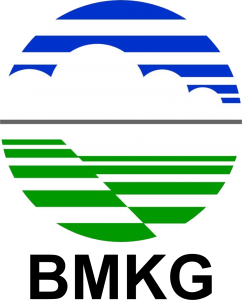

Di tengah ancaman perubahan iklim yang meningkatkan risiko bencana hidrometeorologi seperti banjir dan
kekeringan, pengelolaan Sumber Daya Air (SDA) saat ini dihadapkan pada tantangan besar yang memerlukan
langkah taktis dan terintegrasi.
Tantangan Saat Ini
Pengambilan keputusan sering kali terhambat oleh data H3 (Hidrologi, Hidrometeorologi, dan Hidrogeologi)
antarinstansi yang belum terintegrasi, standar belum seragam, serta kualitas dan aksesibilitas data yang
belum optimal di beberapa Wilayah Sungai.
Sinergi Terpadu (PSIH3)
Pengelolaan Sistem Informasi H3 (SIH3) yang terpadu dan didukung oleh kebijakan PSIH3 yang jelas mutlak
diperlukan guna memperkuat koordinasi, menyediakan data yang valid, serta mengoptimalkan monitoring di
lapangan.
Dampak & Tujuan Akhir
Mewujudkan pengelolaan data yang akurat, berkelanjutan, dan mudah diakses. Menjadi fondasi utama dalam
pengambilan keputusan berbasis data serta mitigasi bencana secara efektif.
Instansi Terkait SIH3
Koordinator PSIH3 Wilayah Sungai Bali Penida
Dinas Pekerjaan Umum, Penataan Ruang, Perumahan, dan Kawasan Permukiman (DPUPRKIM) Provinsi Bali
Pengelola Portal PSIH3
Balai Wilayah Sungai Bali Penida
Penanggung Jawab Pengelolaan Hidrologi
Balai Wilayah Sungai Bali Penida

Penanggung Jawab Hidrometeorologi
Badan Meteorologi, Klimatologi, dan Geofisika Stasiun Klimatologi (BMKG) Bali
Penanggung Jawab Hidrogeologi
Dinas Ketenagakerjaan dan Energi Sumber Daya Mineral Provinsi Bali
Kolaborasi Pokja PSIH3 - TKPSDA WS Bali Penida
Peta Informasi Hidrologi
Live Data
Total Stasiun
—
Jenis Sensor
—
Update Terakhir
—
Stasiun Aktif
—
Kontrol & Filter Data
Daftar Lokasi Pos
Status Titik
Pos Aktif
Pos Offline
Titik Dipilih
Informasi Detail
Pilih stasiun pada peta atau daftar sisi kiri untuk memuat data
sensor aktual.
Hardware Code
Kirim Data
Latitude
Longitude
Hasil Ukur Sensor
⚠️ Status Siaga
Curah Hujan
Pengukuran intensitas curah hujan harian dari stasiun
otomatis (ARR).
—
Tinggi Muka Air
Monitoring fluktuasi ketinggian air di permukaan daerah
aliran sungai (TMA).
—
Kualitas Air
Analisis parameter kimiawi & kondisi baku mutu air secara
otomatis terintegrasi.
—
Hidrometeorologi
Dalam pengembangan
Pemberitahuan
Halaman ini sedang dalam tahap penyiapan dan pengembangan.
Mohon perhatian Anda bahwa laman yang berisi data dan/atau informasi Hidrometeorologi ini
sedang dalam tahap penyiapan dan pengembangan.
Kami berkomitmen untuk menyediakan akses yang komprehensif dan akurat terhadap data Hidrometeorologi di
Wilayah Sungai Bali Penida.
Kami bekerja keras untuk memastikan semua data dan/atau informasi yang disajikan relevan dan mudah diakses.
Terima kasih atas dukungan dan kontribusi Anda dalam
pengelolaan Sumber Daya Air di Wilayah Sungai Bali Penida.
Prakiraan Kondisi Iklim dan Peringatan Dini Untuk Kondisi
Iklim Ekstrim
Segera hadir
🌡️
Informasi Lain Terkait Dengan Kondisi Atmosfer
Segera hadir
Hidrogeologi
Dalam pengembangan
Pemberitahuan
Halaman ini sedang dalam tahap penyiapan dan pengembangan.
Mohon perhatian Anda bahwa laman yang berisi data dan/atau informasi Hidrogeologi ini
sedang dalam tahap penyiapan dan pengembangan.
Kami berkomitmen untuk menyediakan akses yang komprehensif dan akurat terhadap data Hidrogeologi di Wilayah
Sungai Bali Penida.
Kami bekerja keras untuk memastikan semua data dan/atau informasi yang disajikan relevan dan mudah diakses.
Terima kasih atas dukungan dan kontribusi Anda dalam
pengelolaan Sumber Daya Air di Wilayah Sungai Bali Penida.
Informasi mengenai dasar hukum dan nota kesepakatan
SIH3.
Dasar Hukum
18 Mei 2026
Dasar Hukum Pengelolaan Sistem Informasi Hidrologi, Hidrometeorologi, dan
Hidrogeologi
Dasar hukum pengelolaan Sistem Informasi H3 (Hidrologi, Hidrometeorologi, dan Hidrogeologi) ini diatur
melalui rangkaian regulasi dari tahun 2013 hingga 2024 yang berfokus pada integrasi data, koordinasi
antarlembaga, dan keberlanjutan sistem informasi Sumber Daya Air (SDA).
Nota Kesepakatan Tim Koordinasi Pengelolaan Sumber Daya Air (TKPSDA) Wilayah Sungai Bali Penida
Kesepakatan ini menetapkan bahwa PSIH3 sangat penting sebagai dasar pengambilan keputusan yang akurat
dan terpadu demi mewujudkan ketahanan air di wilayah tersebut.
Matrik Tindak Lanjut Kebijakan dan Strategi Pengelolaan Sistem Informasi Hidrologi, Hidrometeorologi,
dan Hidrogeologi (PSIH3)
Matriks detail mengenai tindak lanjut kebijakan dan strategi pengelolaan PSIH3 di wilayah sungai
tersebut. Di dalamnya diatur pembagian tugas spesifik, kegiatan implementasi, serta target capaian
(output).
Target Pelaksanaan Pengelolaan Sistem Informasi H3 (PSIH3)
Tabel target pelaksanaan pengelolaan Sistem Informasi H3 (PSIH3) yang merinci luaran (output) konkret
dari setiap arah kebijakan dan strategi yang disepakati.